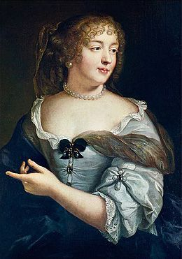

MADAME DE SÉVIGNÉ

Kỷ niệm Madame de Sévigné [1626-1696] vị phu nhân quý hóa của lâu đài Rochers, Roger Duchéne - người canh giữ nghiêm cẩn ngôi đền của bà, xuất bản hai cuốn sách: Một cuốn tiểu sử và một khảo luận, có phần khắc khổ nhưng lại không thể thiếu được đối với Marie de Sévigné, nhà văn. Anne Bernet, với giọng văn có phần “góp gạo ăn chung” hơn, nhưng lại cũng đáng yêu hơn, cũng cho ra một cuốn tiểu sử khác. Về phần các nhà sử học, Jacqueline Quenneau và Jean-Yves Pate cho ra một cuốn sách đầy trí xảo Nghệ thuật sống vào thời Madame de Sévigné. Và một album lộng lẫy Kỷ niệm ẩm thực của Madame de Sévigné. Nhưng giá trị to lớn của năm nay về Sévigné lại thuộc về Georges Laffly, người vượt lên trước sự lười lẫm tự nhiên của người đương thời, đã giới thiệu một cuốn sao lục về thư tín nổi tiếng làm cho ta có thể thưởng thức cái trí tuệ và những sắc thái của nó mà không phải ngấu nghiến hết tất cả: Một “tuyệt tác Sévigné” mang lại cho bà hình ảnh một nhà duy đạo đức.
La Bruyère, một nhà duy đạo đức khác cũng mất cùng năm với bà – 300 năm trước – đã viết về những người phụ nữ thời ông: “Nữ giới đi xa hơn giới mày râu chúng ta về tài văn chương. Nếu những người phụ nữ luôn luôn đúng đắn, tôi dám nói rằng những bức thư của một số người có lẽ là cái hay hơn cả mà chúng ta có trong ngôn ngữ viết”. Người ta khó mà tìm ra một cách định nghĩa tốt hơn về tác phẩm của Madame de Sévigné, tên khai sinh là Marie de Chantal. Tại sao bà lại nổi tiếng và giữ địa vị duy nhất trong lịch sử văn học Pháp? Từ câu chuyện gia đình: Ngày 4/2/1671 Francoise-Margueritte de Sévigné - người mà vua Louis XIV theo người ta đồn là rất say mê cô - đi lấy chồng và rời xa mẹ. Kết quả là sự ra đời một loạt thư từ quan trọng giữa Marie de Sévigné và cô con gái mình bây giờ đã trở thành Madame de Grignan. Hàng chục bức thư kéo dài trong 25 năm, chứng cứ của mối tình mẫu tử không phai nhạt.
Madame de Chantal đã làm cho nhiều nhà trí thức say đắm – từ Bussy - Rabutin, người anh em họ, đến tiểu thuyết gia Roger Nimier, trong những tác phẩm của mình. Bussy viết về bà qua một nhân vật hóa thân là Madame de Chenneville: “Không hề có một phụ nữ nào ở Pháp lại có một trí tuệ và sức mạnh đến thế. Tính cách của bà rất hoạt bát và khinh khoái, một người đẹp được ngưỡng mộ đương thời”.
Madame de Sévigné thường nghĩ là nếu dòng họ bà đi vào lịch sử đó là nhờ vào tổ tiên, những chiến tích quân sự và danh tiếng của người bà con họ hàng. Bà chỉ tự coi mình là một bà mẹ lo lắng đến con cái. Thế nhưng những thư tín của bà, những chuyện trò và giai thoại của bà, với chất tự nhiên và vẻ duyên dáng của nó khiến người ta thèm muốn, đã trở thành một hiện tượng của thế kỷ XVII. Bà có một tài năng văn chương hơn người, có thể lưu danh sử sách.
Vậy tài năng đó ra sao? Bà chỉ viết theo sự hưng phấn khi trao đổi thư từ, cái thường là dấu hiệu lành mạnh tuyệt vời đối với một nhà văn như Duchêne đã nhận định: “Trong cái thế giới mà bà dự phần, người ta viết để đưa lại thích thú cho người đọc bất chấp số lượng họ là bao nhiêu”. Thời buổi đó thật thoải mái và người ta biết thưởng thức. Và rồi bà đã trở thành một Colette (nhà văn nổi tiếng của Pháp đầu thế kỷ XX) rất sớm. Với thiên bẩm văn chương có lần bà đã thú nhận: “Tôi viết nhanh đến mức mà tôi không kịp nghĩ”.
Madame de Chantal sinh tại Paris ngày 5/2/1626 trong một gia đình quý tộc. Bà Marie de Coulanges, người mẹ, đã mất hai người con trước khi sinh ra bà. Nhưng việc đại khánh này lại bị che phủ đi vì cái chết của người cha, Celse Bénigne de Rabutin, vào một năm sau trên đảo Ré khi chiến đấu với quân Anh.
Năm 1633, bà Marie de Coulanges cũng qua đời và Marie de Rabutin-Chantal mồ côi vào lúc 7 tuổi. Bà được gia đình nhà Coulanges nuôi dưỡng và đến năm 18 tuổi, theo phong tục thời đại lấy Henri de Sévigné, một hầu tước có thế lực. Henri đẹp trai dũng cảm, chủ lâu đài Rochers, nhưng lại ăn chơi đàng điếm, bỏ rơi bà vợ trẻ để chạy theo Ninon de Lenclos và bao nhiêu phụ nữ khác. Nhưng lâu dài Rochers, nơi Henri sống thời thơ ấu, lại cuốn hút bà, và giữa sự thoái ẩn đồng nội và cuộc sống Paris, bà đã sinh hạ Francoise Marguerite de Sévigné, nữ bá tước de Grignan sau này, vào năm 1648, ngay trước khi chồng mình ngã xuống sau vụ đấu súng với hiệp sĩ Albet vì một người phụ nữ là Madame de Gondran khi ấy bà Sévigné mới 22 tuổi. Madame de Sévigné trở thành một quả phụ thực sự, bà đã chọn con đường trung dung: nhiều bạn, ít người yêu. Bao kẻ đã say mê nữ hầu tước này: Turenne gõ cửa nhà bà đến “20 lần”, rồi công tước de Conti, Lenet, Montreuil… Năm 1652 Rohan và Tonquedec đấu đá nhau vì bà.
Cô con gái của bà, Francoise Marguerite, là một “cô gái đẹp nhất nước Pháp”, tham gia trình diễn vũ balê, người mà La Fontaine đã tặng cô truyện kể Con sư tử đa tình. Sau khi người chồng, bá tước de Grignan được phong chức trung tướng ở Provence, thì người vợ trẻ không thể sống xa chồng và rời mẹ mình. Từ đó, trong hơn 20 năm, từ 1671 đến 1694, là sự trao đổi thư tín không ngưng nghỉ giữa bà mẹ và cô con gái. Bà viết: “Ngày nào mẹ cũng viết cho con. Đấy là niềm vui của mẹ. Mẹ chỉ còn có niềm thích thú đó thôi”. Sự trao đổi thư từ diễn ra đều đặn, cứ một tuần hai lần. Bà còn có những quan hệ thư tín với những nhà văn và nhân vật đương thời: Ménage Pomponne, Bussy, Guitaut, Fouquet, La Rochefoucauld, La Bruyère, La Fontaine và người bạn gái thân thiết, Madame de La Fayette, trong thời đại được mệnh danh là “Thế kỷ lớn”.
Vào chuyến trở về cuối cùng của bà đến lâu đài Rochers, bà hầu tước cảm thấy nỗi thê lương đang chiếm lĩnh mình: “… những lối đi hiu quạnh và ảm đạm hơn… cái vô cùng đó đã trở thành tận cùng”. Những bước đi cuối cùng bà đi dạo mà không tự ý thức là những bước đến mồ huyệt. Bà không hình dung được rằng mấy tháng sau bà sẽ an nghỉ đời đời. Bao giờ bà cũng là mình một cách tuyệt vời, tự do và tự nhiên: Đấy là sức quyến rũ của bà. Không một phe một đảng nào, không một trào lưu tư tưởng nào làm phương hại đến bà. Đấy là một tâm hồn phụ nữ đầy trí tuệ, đã tắt đi vào ngày 17/4/1696 mà không hề nghĩ là người ta lại có thể công bố những bức thư của mình, kể cả trong giới thượng lưu của các xa lông, vì theo bà “chúng chả có giá trị gì”.
Sự trớ trêu của số phận là chính nhà vua, người mở hòm đựng di vật bà lại là người công bố đầu tiên những bức thư của bà.